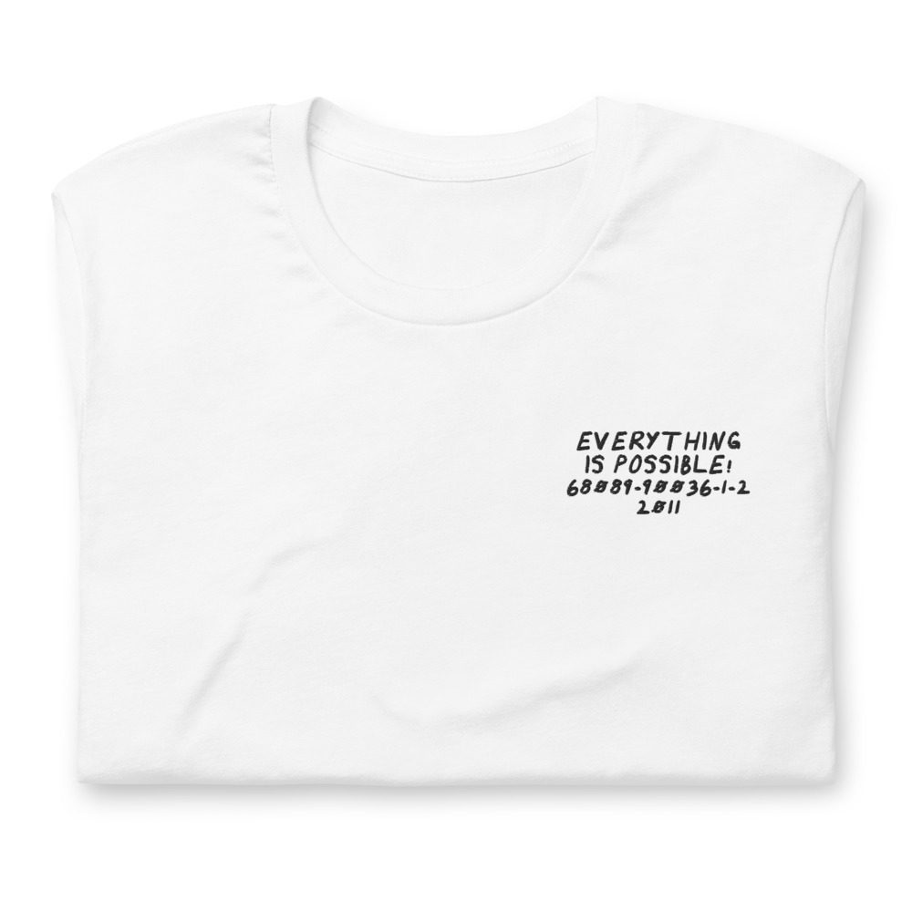
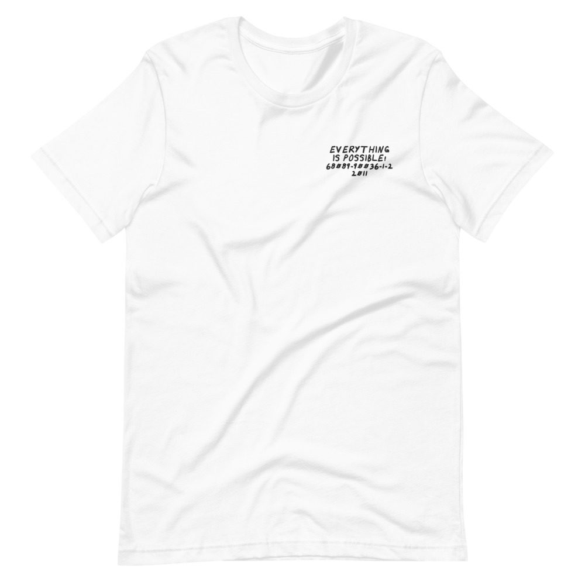

Os Mutantes – Everything Is Possible!
Luaka Bop’s best-of.
LP · Luaka Bop 68089-90036-1-2 · 2011
Ungraded, checked before it ships
Comes with its own shirt: a white tee embroidered on the chest with its title, catalog number and year in my handwriting. Pick a size at checkout. It’s made for you and ships on its own.


Buy $60
Play a track
Side 1
- Ando Meio Desligado3:03
- Ave, Lúcifer2:20
- Dia 364:02
- Baby (1971)3:40
- Fuga N° II3:41
- Cantor De Mambo4:39
- Adeus Maria Fulô3:06
Side 2
- Desculpe, Babe2:51
- El Justiciero3:55
- Panis Et Circenses3:38
- A Minha Menina4:41
- Bat Macumba3:10
- Le Premier Bonheur Du Jour3:36
- Baby (1968)3:01
Performer
Arnaldo Baptista, Rita Lee, Sergio Dias
Drums
Ronaldo P. Leme, Dirceu Medeiros
Guitar
Liminha
Produced by Yale Evelev, Arnaldo Baptista, Arnaldo Saccomani, Manoel Barenbein